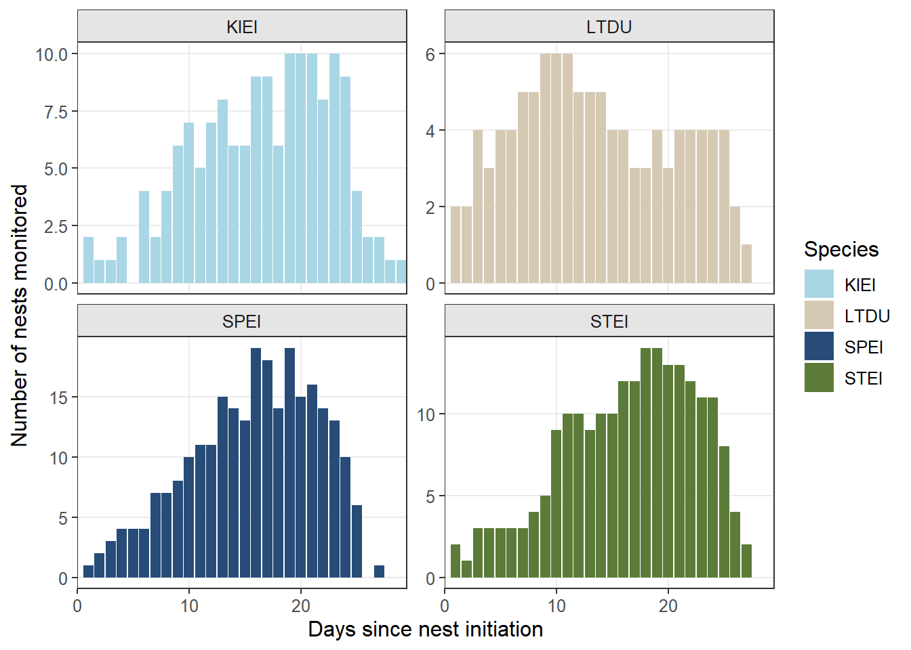
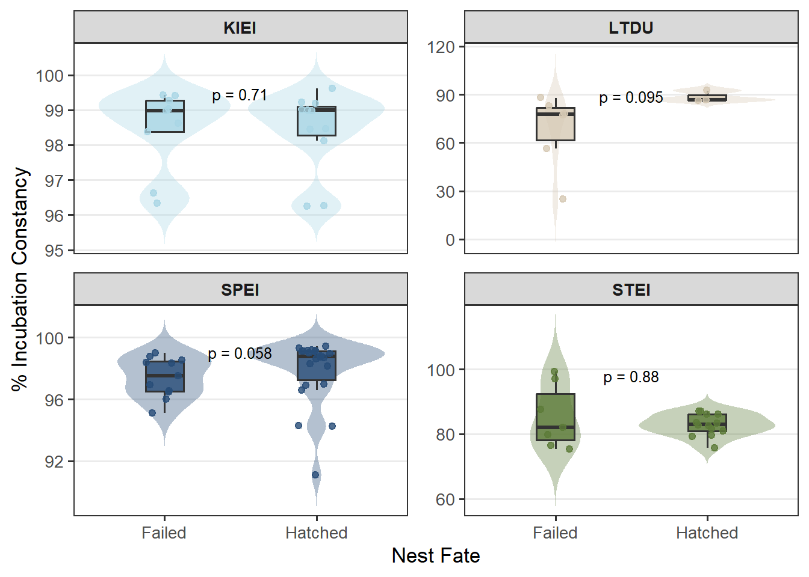
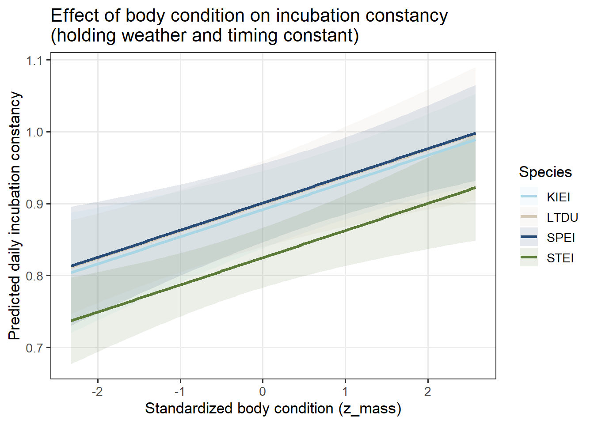

# Read data from relative paths defined in YAML paramshen.act <-read.csv(params$hen_file)nests <-read.csv(params$nests_file)met_raw <-read.csv(params$met_file)# Set color palettepalette <-c("KIEI"="#A9D6E5", # orange"LTDU"="#D6C9B4", # sky blue"SPEI"="#274c77", # bluish green"STEI"="#5C7B38"# reddish purple)
Overview
This document summarizes incubation constancy patterns, recess behavior in relation to environmental effects and body-mass relationships across four sea duck species monitored between 2011 and 2025:
King Eider (KIEI)
Long-tailed Duck (LTDU)
Spectacled Eider (SPEI)
Steller’s Eider (STEI)
All analyses update as underlying data files are updated.
Biological Hypotheses Tested
There are species-specific differences in incubation constancy (e.g., larger-bodied ducks like KIEI and SPEI will have higher incubation metrics than LTDU and STEI).
Body condition at the start of incubation impacts incubation constancy.
Weather (wind speed and min/max temperature) impact daily incubation constancy.
Incubation constancy is not constant throughout the nesting season.
Incubation constancy differs for Hatched and Failed nests.
Nest Monitoring Overview
A total of 137active nests were located across all years, consisting of:
36KIEI
30LTDU
43SPEI
28STEI
Code
### Filtering## Remove nests with < 1 day (1440 mins) of observationnest.incub.time <- hen.act %>%filter(Behavior %in%c("N-NotIncubating", "I-Incubating")) %>%group_by(Nest_ID) %>%summarise(total.incub.mins =sum(DurationMins, na.rm =TRUE),.groups ="drop" )# Identify nests with >1440 minsvalid.nests <- nest.incub.time %>%filter(total.incub.mins >=1440) %>%pull(Nest_ID)# New working dataset without low nestshen.act.filtered <- hen.act %>%filter(Nest_ID %in% valid.nests)
Filtering
50 nests were removed from the dataset because they had <1 day (1440 minutes) of incubation behavior (failed shortly after deployment).
Table 1. The number of monitored nests per species and year. The apparent nest success is calculated as the proportion of nests that hatched among those with known fates.
Code
# Drop nests with undetermined fates for summaryhen.act.filtered <- hen.act.filtered %>%filter(!Fate_combined %in%c("Undetermined - Nest is not viewable","Undetermined - Active upon cam collect or battery died" ))# New column with just hatch/failhen.act.filtered <- hen.act.filtered %>%mutate(Fate_simple =case_when( Fate_combined =="Hatched"~"Hatched", Fate_combined %in%c("Depredated","Abandoned","Trampled - Caribou herd trampling area where nest is" ) ~"Failed",TRUE~NA_character_ ) )# Create one record per nest. nest.level <- hen.act.filtered %>%group_by(Species, year, Nest_ID) %>%summarise(Fate_simple =case_when(any(Fate_combined =="Hatched", na.rm =TRUE) ~"Hatched",any(Fate_combined %in%c("Depredated","Abandoned","Trampled - Caribou herd trampling area where nest is" ), na.rm =TRUE) ~"Failed",TRUE~NA_character_ ),.groups ="drop" )# Count nests per species per yearnests.per.year <- nest.level %>%count(Species, year, name ="n_nests")# Calculate apparent nest successapparent.success <- nest.level %>%filter(!is.na(Fate_simple)) %>%# only nests with determinable fategroup_by(Species) %>%summarise(apparent.success =mean(Fate_simple =="Hatched"),apparent_success_pct =round(100* apparent.success, 1),.groups ="drop" )# Convert to wide-formatnests.wide <- nests.per.year %>%pivot_wider(names_from = year,values_from = n_nests,values_fill =0 )# Order my columnsyear_cols <- nests.wide %>%select(-Species) %>%names() %>%as.integer() %>%sort() %>%as.character()nests.wide.ordered <- nests.wide %>%select(Species, all_of(year_cols))# Combine tablessummary_wide <- nests.wide.ordered %>%left_join(apparent.success, by ="Species") %>%mutate(Total =rowSums(across(all_of(year_cols)), na.rm =TRUE) ) %>%relocate(Total, .after =all_of(tail(year_cols, 1))) %>%arrange(Species)# Display publication-quality tablesummary_wide %>%select(Species, all_of(year_cols), Total, apparent_success_pct) %>%rename(`Apparent Nest Success (%)`= apparent_success_pct) %>%gt() %>%cols_align(align ="center",columns =everything() ) %>%tab_options(table.font.size =px(12),data_row.padding =px(2) )
Species
2002
2011
2012
2013
2014
2015
2016
2019
2022
2023
2024
2025
Total
Apparent Nest Success (%)
KIEI
0
1
3
0
3
0
2
1
2
3
3
3
21
52.4
LTDU
0
4
0
1
2
1
1
0
0
0
0
0
9
33.3
SPEI
1
1
4
2
2
5
3
4
0
9
4
1
36
63.9
STEI
0
6
3
0
3
3
0
3
1
0
1
0
20
65.0
Code
### Summary of nest predators by years, all nests. # Summarize number of nests by Year and Predator# Summarize by Year and Predator, excluding "NotApplicable"predator_summary <- hen.act.filtered %>%filter(!is.na(Fate_Dep_Species_video), Fate_Dep_Species_video !="NotApplicable") %>%group_by(year, Fate_Dep_Species_video) %>%summarise(n_nests =n_distinct(Nest_ID),.groups ="drop" )# Calculate percent of nests per predator for each yearpredator_summary <- predator_summary %>%group_by(year) %>%mutate(total_nests_year =sum(n_nests),percent =round(100* n_nests / total_nests_year, 1) ) %>%ungroup() %>%arrange(year, desc(percent))ggplot(predator_summary, aes(x =factor(year), y = percent, fill = Fate_Dep_Species_video)) +geom_bar(stat ="identity", position ="stack") +labs(title ="",x ="Year",y ="Percent of Depredated Nests",fill ="Predator Species" ) +theme_minimal(base_size =12) +theme(legend.position ="right",axis.text.x =element_text(angle =45, hjust =1) )
Figure 1. Stacked bars show the percent contribution of identifiable predator species to nest failure from 2011 - 2025. Colors correspond to predator species detected via camera evidence or field sign, including Arctic Fox (ARFO), Raven (REFO), Glaucous Gull (GLGU), Jaeger species (JASP), Long-tailed Jaeger (LTJA), Parasitic Jaeger (PAJA), Polar Bear (POBE), Pomarine Jaeger (POJA), Snowy Owl (SNOW), and cases where the predator could not be determined (Unknown). Considerable interannual variation is evidence, with Arctic Fox consistently responsible for a large share of depredations in most years, while other species (e.g., gulls, jaegers, polar bears) contribute episodically.
Figure 2. Mean duration of incubation recesses with standard error for four sea duck species across three categories of recess cause: human disturbance (researchers), other causes (e.g., voluntary recesses, undetermined causes), and predator disturbance. For most ducks, predator disturbance tends to lead to longer and more variable recess durations. KIEI and LTDU had particularly long predator-related recesses. KIEI and LTDU were more vulnerable to longer recesses caused by humans. The shorter “Other” recesses were shorter, as expected.
Table 2. Summary of sea duck nest monitoring effort by year and species at Point Barrow, Alaska. We show the number of monitored nests per species (after filtering), total minutes of incubation-related behavior recorded and mean number of minutes monitored per nest based on video footage classifications as either incubating or recess behavior.
Code
# Verify fixed quirk with DurationMins, create days columnhen.act.filtered <- hen.act.filtered %>%mutate(DateTimeBegin =as.POSIXct(DateTimeBegin, tz ="UTC"),DateTimeEnd =as.POSIXct(DateTimeEnd, tz ="UTC"),DurationMins =as.numeric(difftime(DateTimeEnd, DateTimeBegin, units ="mins")),DurationDays = DurationMins / (60*24) # convert minutes → days )# Summarize days per nest of I and N behaviorsnest_days <- hen.act.filtered %>%filter(Behavior %in%c("I-Incubating", "N-NotIncubating")) %>%group_by(Species, Nest_ID) %>%summarise(days_per_nest =sum(DurationDays, na.rm =TRUE),.groups ="drop" )# Summarize by species and add SDnest_summary <- nest_days %>%group_by(Species) %>%summarise(Number_of_Nests =n(),Total_Days_Monitored =sum(days_per_nest, na.rm =TRUE),Mean_Days =mean(days_per_nest, na.rm =TRUE),SD_Days =sd(days_per_nest, na.rm =TRUE),Mean_SD =paste0(round(Mean_Days, 1), " ± ", round(SD_Days, 1) ),.groups ="drop" )# Create table with mean ± SD instead of separate columnsnest_summary %>%select( Species, Number_of_Nests, Total_Days_Monitored,`Mean Days per Nest (± SD)`= Mean_SD ) %>%kable(format ="html",digits =1,format.args =list(big.mark =","),caption ="",align ="l" ) %>%kable_styling(bootstrap_options =c("striped", "hover", "condensed"),full_width =FALSE,font_size =12 )
Species
Number_of_Nests
Total_Days_Monitored
Mean Days per Nest (± SD)
KIEI
21
235.9
11.2 ± 5.2
LTDU
9
102.0
11.3 ± 7.3
SPEI
35
600.6
17.2 ± 26.3
STEI
20
187.3
9.4 ± 5.5
Noteon nesting initiation. Completeness varies among incubation initiation estimates (candling, hatch observations, etc), so I’ve made a tiered priority structure for estimating incubation start: inc_firsthatch; inc_hatch; inc_mean. If hatch is observed, we use inc_firsthatch, else inc_hatch. If candling/floating data are available, we use inc_mean. I created a new column that estimates this.
Code
## Prepping dataframe# Tiered incubation estimate strategy.hen.act.filtered <- hen.act.filtered %>%mutate(inc_init_final =case_when(!is.na(inc_firsthatch) ~ inc_firsthatch,!is.na(inc_hatch) ~ inc_hatch,!is.na(inc_mean) ~ inc_mean,TRUE~NA_real_ ),inc_init_tier =case_when(!is.na(inc_firsthatch) ~"hatch_first",!is.na(inc_hatch) ~"hatch_mean",!is.na(inc_mean) ~"floating_mean",TRUE~"missing" ) )# Calculating Day of Year of each activity. hen.act.filtered <- hen.act.filtered %>%mutate(DateTimeBegin =parse_date_time(DateTimeBegin,orders =c("Ymd HMS", "Ymd HM", "Ymd", "mdY HMS", "mdY HM", "mdY")),doy =yday(DateTimeBegin) )# Calculate days since initiationhen.act.filtered <- hen.act.filtered %>%mutate(DateTimeBegin =ymd_hms(DateTimeBegin),doy =yday(DateTimeBegin),day_since_init = doy - inc_init_final,day_since_init_int =floor(day_since_init) )# Build dataset for nests monitored per day since initiationmonitoring_dist <- hen.act.filtered %>%filter( Behavior %in%c("I-Incubating", "N-NotIncubating"),!is.na(day_since_init_int) ) %>%distinct(Species, Nest_ID, day_since_init_int) %>%# one record per nest per daycount(Species, day_since_init_int, name ="n_nests")ggplot(monitoring_dist,aes(x = day_since_init_int, y = n_nests, fill = Species)) +# <- map fill to Speciesgeom_col() +facet_wrap(~ Species, ncol =2, scales ="free_y") +scale_fill_manual(values = palette) +# <- your palette objectscale_x_continuous(expand =c(0,0), limits =c(0, NA)) +# start at 0labs(x ="Days since nest initiation",y ="Number of nests monitored",fill ="Species" ) +theme_bw() +theme(panel.grid.minor =element_blank(),strip.background =element_rect(fill ="grey90"),text =element_text(size =12) )

Figure 3. Number of timelapse-monitored nests per day since nest initiation for each sea duck species. Monitoring effort is shown as counts of nests with recorded incubation-related behaviors.
Incubation Behavior
Incubation constancy defined as the proportion of time spent on the nest, summarized as daily and total.
Table 3. Mean incubation constancy for four sea duck species near Point Barrow, Alaska based on video footage. Values represent the mean percentage of time hens spent incubating during the observation period with 95% confidence intervals. Estimates are shown for all species nests combined and between successful and failed nests. Incubation constancy was uniformly high for King Eiders and Spectacled Eiders, variable for Steller’s Eiders, and substantially lower for Long-tailed Ducks. Differences between hatched and failed nests were generally small.
Wilcoxon Rank Sum test to compare incubation constancy by species and fate
Code
# Extract nest-level constancy plus fatenest_df <- nest_behavior_summary %>%filter(Fate_simple %in%c("Hatched", "Failed")) %>%select(Species, Nest_ID, Fate_simple, constancy)# Run Wilcoxon testwilcox_by_species <- nest_df %>%group_by(Species) %>%summarise(n_hatched =sum(Fate_simple =="Hatched"),n_failed =sum(Fate_simple =="Failed"),median_hatched =median(constancy[Fate_simple =="Hatched"], na.rm =TRUE),median_failed =median(constancy[Fate_simple =="Failed"], na.rm =TRUE),p_value =wilcox.test(constancy ~ Fate_simple)$p.value,W_stat =wilcox.test(constancy ~ Fate_simple)$statistic,.groups ="drop" )# Wilcoxon p-values for each species + y position for labelp_labels <- nest_df %>%group_by(Species) %>%summarise(p_value =wilcox.test(constancy ~ Fate_simple)$p.value,# place label slightly below the max constancy for each speciesy_pos =max(constancy *100, na.rm =TRUE) -0.05*diff(range(constancy *100, na.rm =TRUE)),.groups ="drop" ) %>%mutate(label =ifelse(p_value <0.001, "p < 0.001",paste0("p = ", signif(p_value, 2))) )ggplot(nest_df,aes(x = Fate_simple,y = constancy *100)) +geom_violin(aes(fill = Species),trim =FALSE,alpha =0.35,color =NA) +geom_boxplot(aes(fill = Species),width =0.25,alpha =0.8,outlier.shape =NA,color ="grey20") +geom_jitter(aes(color = Species),width =0.12,size =1.8,alpha =0.8) +geom_text(data = p_labels,aes(x =1.5, y = y_pos, label = label),inherit.aes =FALSE,size =3.4 ) +facet_wrap(~ Species, scales ="free_y") +scale_y_continuous(name ="% Incubation Constancy"# free_y lets each panel zoom accordingly, bc sharing the same y axis didn't look good. ) +scale_x_discrete(name ="Nest Fate") +scale_fill_manual(values = palette, guide ="none") +scale_color_manual(values = palette, guide ="none") +theme_bw(base_size =13) +theme(panel.grid.minor =element_blank(),panel.grid.major.x =element_blank(),strip.text =element_text(face ="bold"),panel.spacing =unit(0.8, "lines") )

Figure 4. Nest-level incubation constancy (% time spent incubating) for hatched and failed nests of sea duck species near Point Barrow, Alaska. Distributions are shown as violins and jittered points representing individual nests. P-values from Wilcoxon rank-sum tests are shown. Hatched nests tended to exhibit slightly higher incubation constancy than failed nests, although differences were small and not statistically significant.
Recess Behavior Summary
Code
### Recess Frequency # Filter for recessesrecess_df <- hen.act.filtered %>%filter(Behavior =="N-NotIncubating") %>%mutate(DateTimeBegin =ymd_hms(DateTimeBegin),Date =as.Date(DateTimeBegin) # daily index )# Calculate recesses per nest per dayrecess_daily <- recess_df %>%group_by(Species, Nest_ID, Date) %>%summarise(recesses =n(),.groups ="drop" )# Average recesses per day for each nestrecess_per_nest <- recess_daily %>%group_by(Species, Nest_ID) %>%summarise(recesses_per_day =mean(recesses, na.rm =TRUE),.groups ="drop" )### Recess Durations# per nest durationsrecess_duration_per_nest <- hen.act.filtered %>%filter(Behavior =="N-NotIncubating") %>%group_by(Species, Nest_ID) %>%summarise(mean_recess_duration =mean(DurationMins, na.rm =TRUE),.groups ="drop" )# Create summaries to fill into textrecess_summary <- recess_per_nest %>%left_join(recess_duration_per_nest, by =c("Species", "Nest_ID")) %>%group_by(Species) %>%summarise(mean_recess_freq =mean(recesses_per_day, na.rm =TRUE),sd_recess_freq =sd(recesses_per_day, na.rm =TRUE),mean_duration =mean(mean_recess_duration, na.rm =TRUE),sd_duration =sd(mean_recess_duration, na.rm =TRUE),n_nests =n(),.groups ="drop" ) %>%mutate(freq_label =sprintf("%.2f ± %.2f recesses per day", mean_recess_freq, sd_recess_freq),dur_label =sprintf("%.0f ± %.0f minutes", mean_duration, sd_duration) )recess_summary %>%mutate(summary_text =paste0( Species, " took an average of ",sprintf("%.2f ± %.2f recesses per day", mean_recess_freq, sd_recess_freq),". Recesses lasted ",sprintf("%.0f ± %.0f minutes on average.", mean_duration, sd_duration) ) ) %>%select(summary_text)
# A tibble: 4 × 1
summary_text
<chr>
1 KIEI took an average of 1.51 ± 0.40 recesses per day. Recesses lasted 23 ± 10…
2 LTDU took an average of 3.18 ± 1.61 recesses per day. Recesses lasted 118 ± 1…
3 SPEI took an average of 2.52 ± 2.35 recesses per day. Recesses lasted 24 ± 11…
4 STEI took an average of 5.43 ± 1.98 recesses per day. Recesses lasted 37 ± 13…
Figure 5. Mean daily incubation constancy (+-SE) for four sea duck species across 4-day incubation stage intervals. Constancy represents the percentage of time hens spent incubating each day, calculated from timelapse video monitoring. Constancy remained high for King Eiders and Spectacled Eiders throughout the incubation period, whereas Long-tailed Ducks and Steller’s Eiders exhibited lower constancy and greater variability across stages.
Daily Incubation Constancy Analysis
We evaluated how body condition, daily weather, and incubation initiation timing influenced daily incubation constancy using a linear mixed-effects model. Daily incubation constancy is defined as the proportion of each 24-h period during which a hen was recorded incubating based on time-stamped nest-camera classifications. Analyses are conducted at the nest-day level (one row per nest per day of monitoring).
Predictor variables:
Daily weather variables were extracted from the NOAA meteorological station at Point Barrow and matched to nest-day observations. Weather predictors include TMAX (daily maximum air temperature °C), TMIN (daily minimum air temperature °C), and AWND (mean daily wind speed). Each weather variable was z-transformed for standardization to ease interpretation and reduce collinearity.
Code
### Data prep# daily behavior dataframedaily_ducks <- hen.act.filtered %>%filter(Behavior %in%c("I-Incubating", "N-NotIncubating")) %>%mutate(DateTimeBegin =ymd_hms(DateTimeBegin),date =as.Date(DateTimeBegin) ) %>%group_by(Species, Nest_ID, date) %>%summarise(mins_inc =sum(DurationMins[Behavior =="I-Incubating"], na.rm =TRUE),mins_non =sum(DurationMins[Behavior =="N-NotIncubating"], na.rm =TRUE),mins_tot = mins_inc + mins_non,constancy_daily =if_else(mins_tot >0, mins_inc / mins_tot, NA_real_),recesses_daily =sum(Behavior =="N-NotIncubating", na.rm =TRUE),day_since_init =mean(day_since_init, na.rm =TRUE),.groups ="drop" )# GHCND units: TAVG and AWND are in tenths (°C and m/s)# Using TMAX; TMIN; AWND, TAVGmet_daily <- met_raw %>%mutate(date =as.Date(DATE),TMAX_C =ifelse(is.na(TMAX), NA_real_, TMAX /10), # tenths °C → °CTMIN_C =ifelse(is.na(TMIN), NA_real_, TMIN /10),TAVG_C =ifelse(is.na(TAVG), NA_real_, TAVG /10),AWND_ms =ifelse(is.na(AWND), NA_real_, AWND /10) # tenths m/s → m/s ) %>%select(date, TMAX_C, TMIN_C, TAVG_C, AWND_ms) %>%arrange(date)# Join datasetsdaily_wx <- daily_ducks %>%left_join(met_daily, by ="date")# There are many NAs for TAVG, so not going to use this one in the models.# Drop NAsdaily_wx_complete <- daily_wx %>%filter(!is.na(constancy_daily),!is.na(TMAX_C),!is.na(TMIN_C),!is.na(AWND_ms) )# Adjust date to day of year formatdaily_wx_complete <- daily_wx_complete %>%mutate(date =ymd(date),DOY =yday(date) )
Body condition is quantified as the residual of individual mass regressed on structural size measurements (wing chord and tarsus length) within species. Residual mass reflects whether a hen was heavier or lighter than expected for her size. To ensure comparability across predictors and facilitate model convergence, mass residuals were z-transformed for standardization. The number of sea duck measurements available per species are show below.
Code
## Data prep# Summary of how many capture duck measurements are available:nests %>%filter(!is.na(fws_steel_band.x),!is.na(mass), !is.na(tarsus_total), !is.na(wing_chord)) %>%group_by(species) %>%summarise(unique_nests =n_distinct(Nest_ID), .groups ="drop") %>%arrange(species)
# Add tiered incubation start estimate rulenests <- nests %>%mutate(inc_init_final =case_when(!is.na(inc_firsthatch) ~ inc_firsthatch,!is.na(inc_hatch) ~ inc_hatch,!is.na(inc_mean) ~ inc_mean,TRUE~NA_real_ ),inc_init_tier =case_when(!is.na(inc_firsthatch) ~"hatch_first",!is.na(inc_hatch) ~"hatch_mean",!is.na(inc_mean) ~"floating_mean",TRUE~"missing" ) )# Adjust capture_date to day of year formatnests <- nests %>%mutate(CaptureDate =ymd(capture_date),Capture_DOY =yday(CaptureDate) )## Plug in# Calculate mass adjusted for body size within each species for a body condition metric. nests_cond <- nests %>%filter(!is.na(mass),!is.na(wing_chord),!is.na(tarsus_total)) %>%group_by(species) %>%group_modify(~ { model <-lm(mass ~ wing_chord + tarsus_total, data = .x) .x$mass_resid <-resid(model) .x }) %>%ungroup()# Add days since incubation start, and adjust mass accordingly. nests_cond <- nests_cond %>%mutate(DaysSinceIncStart =as.numeric(CaptureDate - inc_init_final) )df <- nests_cond# ID rows with all needed variablescomplete_idx <-complete.cases(df[, c("mass", "wing_chord", "tarsus_total", "DaysSinceIncStart")])# Fit model to only complete rowsmass_model <-lm( mass ~ wing_chord + tarsus_total + DaysSinceIncStart,data = df[complete_idx, ])# Create new column, fill with NA, then put residuals in complete rowsdf$mass_resid_adjusted <-NA_real_df$mass_resid_adjusted[complete_idx] <-resid(mass_model)# Assign back to nests_condnests_cond <- df
Timing of incubation initiation was represented by DOY (day of year), also standardized, to capture the seasonal effects of later incubation initiation (e.g., energy depletion, insect harassment, changing predator activity).
Random effects of species, acounting for among-species differences in baseline incubation behavior, and Nest_ID, accounting for repeated measurements of the same nest, are included.
Gaussian mixed-effects models:
Models were fit using the glmmTMB package in R with a Gaussian error distribution and identity link.
Table 4. AIC comparison of competing mixed-effects models describing daily incubation constancy in four sea duck species near Point Barrow, Alaska. Models represent alternative hypotheses, including the effects of body condition only (m_cond), weather only (m_weather), combined additive effects (m_combined), and two interaction models with slopes varying by species (m_int_mass and m_int_doy). Lower AIC values indicate better model support. The model including a Species x Day of Year interaction (m_int_doy) had the strongest support with an AIC of 199.3.
We evaluated multicollinearity and model assumptions for the final selected model (m_int_doy). Variance inflation factors (VIFs) indicated low collinearity among body condition and weather predictors (all VIF < 2.6). DOY and Species showed moderate collinearity (VIF ~ 6-8), possibly explained by different nesting phenology among species. The interaction term (Species x Day of Year) had a high VIF (~10). Overall, I don’t think multicollinearity affects model interpretation.
DHARMa residual diagnostics show mild deviations from uniformity and some outliers. No evidence of overdispersion, so the model looks adequate but hopefully a few more corrections in the data set will improve these?
$uniformity
Asymptotic one-sample Kolmogorov-Smirnov test
data: simulationOutput$scaledResiduals
D = 0.18832, p-value = 5.519e-05
alternative hypothesis: two-sided
$dispersion
DHARMa nonparametric dispersion test via sd of residuals fitted vs.
simulated
data: simulationOutput
dispersion = 1.0056, p-value = 0.92
alternative hypothesis: two.sided
$outliers
DHARMa outlier test based on exact binomial test with approximate
expectations
data: simulationOutput
outliers at both margin(s) = 2, observations = 148, p-value = 0.03583
alternative hypothesis: true probability of success is not equal to 0.001998002
95 percent confidence interval:
0.001640759 0.047961366
sample estimates:
frequency of outliers (expected: 0.001998001998002 )
0.01351351
Likelihood-ratio tests for interaction terms
Code
## 5. Likelihood-ratio tests for interaction terms# Species × condition interaction vs combined modellrt_mass <-anova(m_combined, m_int_mass)# Species × DOY interaction vs combined modellrt_doy <-anova(m_combined, m_int_doy)cat("Likelihood-ratio test: Species × condition (z_mass:Species)\n")
Likelihood-ratio test: Species × condition (z_mass:Species)
Figure 6. Lines with steeper declines indicate faster declines in incubation constancy further into the nesting season. Most species incubation constancy declines later in the nesting season, with the strongest negative slopes in SPEI and KIEI. This suggests that earlier-nesting hens in good condition will incubate more consistently, whereas later nests may face more constraints. Smaller negative trend in STEI, and little to no decline for LTDU.
Code
# (Recommended upstream, but harmless to repeat here)constancy_data <- constancy_data %>%mutate(Species =factor(Species),Nest_ID =factor(Nest_ID) )# Sequence over observed z_massmass_seq <-seq(min(constancy_data$z_mass, na.rm =TRUE),max(constancy_data$z_mass, na.rm =TRUE),length.out =100)# Means for other covariatesmeans <- constancy_data %>%summarise(z_DOY =mean(z_DOY, na.rm =TRUE),z_TMAX =mean(z_TMAX, na.rm =TRUE),z_TMIN =mean(z_TMIN, na.rm =TRUE),z_AWND =mean(z_AWND, na.rm =TRUE) )# Use unique species (works for factor or character)species_vals <-unique(constancy_data$Species)# Prediction grid: vary z_mass across all species, others at meanmass_grid <-expand.grid(z_mass = mass_seq,Species = species_vals) %>%bind_cols( means[rep(1, nrow(.)), ] # repeat means for every row )# Fixed-effect predictions (no random intercepts)pred <-predict( m_int_doy,newdata = mass_grid,type ="response",se.fit =TRUE,re.form =NA)mass_grid$fit <- pred$fitmass_grid$lower <- pred$fit -1.96* pred$se.fitmass_grid$upper <- pred$fit +1.96* pred$se.fitggplot(mass_grid, aes(x = z_mass, y = fit, colour = Species, fill = Species)) +geom_ribbon(aes(ymin = lower, ymax = upper),alpha =0.12, colour =NA) +geom_line(size =1.1) +scale_colour_manual(values = palette) +scale_fill_manual(values = palette) +labs(x ="Standardized body condition (z_mass)",y ="Predicted daily incubation constancy",title ="Effect of body condition on incubation constancy\n(holding weather and timing constant)" ) +theme_bw(base_size =13) +theme(panel.grid.minor =element_blank() )

Figure 7. Across all species, hens in better body condition exhibit higher daily incubation constancy. Species vary in constancy levels, they respond similarly to variation in body condition.
Table 5. Interaction effects between species and day of year on daily incubation constancy. Coefficients are derived from the best-supported mixed-effects model (m-int-doy), including fixed effects for standardized body condition (z_mass), weather variables (z_TMAX, z_TMIN, z_AWND), and an interaction between standardized Day of Year (z_DOY) and Species, with random intercepts for Species and Nest_ID. Negative DOY slopes indicate that incubation constancy declines as the nesting season progresses. Significant interaction terms suggest that the strength of seasonal decline differs among species, with STEI exhibiting the steepest seasonal decrease.
Species × DOY interaction coefficients from m_int_doy
Term
Estimate
Std. Error
z-value
p-value
z_DOY
-0.0598
0.0227
-2.63
0.00851
z_DOY:SpeciesLTDU
0.0831
0.0376
2.21
0.02710
z_DOY:SpeciesSPEI
-0.0094
0.0500
-0.19
0.85000
z_DOY:SpeciesSTEI
0.0187
0.0320
0.58
0.55900
Results Overview
Body condition strongly predicts higher incubation constancy
β = 0.0375, SE = 0.0106, p = 0.00042
A 1 SD increase in mass residual → 3.7% increase in daily constancy.
Interpretation: Hens in better than average body condition per their size spend more of the day incubating. This is a strong and biologically meaningful effect after accounting for weather, timing, species, and nest identity.
Day of Year, or earlier vs later in the nesting season, strongly predicts incubation constancy
β = −0.0434, SE = 0.0138, p = 0.0016
Interpretation: Later-season days are associated with 4.3% lower daily constancy per SD of DOY, independent of body condition and weather. This suggests that environmental or physiological constraints increase as the season progresses (e.g., reduced body condition, increased fly harassment, warmer temps).
Weather variables had no detectable effect
TMAX: p = 0.987
TMIN: p = 0.339
AWND: p = 0.171
Interpretation: Daily weather did not significantly influence time spent incubating.